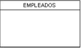
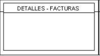
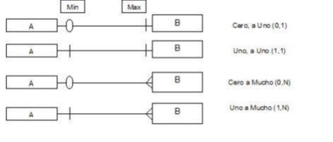

Definición de modelo y modelo de datos.
Se entiende por modelo, el proceso de abstraer una realidad y tratar de modelarla a través de un gráfico, fórmula matemática, prototipo, etc. Para nuestro caso, entenderemos como modelo de datos, la abstracción del mundo real de la organización en término de datos y sus relaciones, plasmada en un gráfico llamado diagrama entidad-relación. Este diagrama, es una técnica de modelado conceptual (lógico) de datos, cuya base teórica se encuentran en la teoría de conjuntos, relaciones y funciones de la ciencia de las matemáticas. Los modelos de datos aportan la base conceptual para diseñar aplicaciones que hacen un uso intensivo de datos, así como la base formal para las herramientas y técnicas empleadas en el desarrollo y uso de sistemas de información. Con respecto al diseño de bases de datos, el modelado de datos puede ser escrito así (Brodie 1984:20): "dados los requerimientos de información y proceso en una aplicación de uso intensivo de datos (por ejemplo, un sistema de información), construir una representación de la aplicación que capture las propiedades estáticas y dinámicas requeridas para dar soporte a los procesos deseados (por ejemplo, transacciones y consultas). Además de capturar las necesidades dadas en el momento de la etapa de diseño, la representación debe ser capaz de dar cabida a eventuales futuros requerimientos". Un modelo de datos es por tanto una colección de conceptos bien definidos matemáticamente que ayudan a expresar las propiedades estáticas y dinámicas de una aplicación con un uso de datos intensivo. Conceptualmente, una aplicación puede ser caracterizada por:
• Propiedades estáticas: entidades (u objetos), propiedades (o atributos) de esas entidades, y relaciones entre esas entidades.
• Propiedades dinámicas: operaciones sobre entidades, sobre propiedades o relaciones entre operaciones.
• Reglas de integridad sobre las entidades y las operaciones (por ejemplo, transacciones).
Así, un modelo de datos se distingue de otro por el tratamiento que da a estas tres categorías. El resultado de un modelado de datos es una representación que tiene dos componentes: las propiedades estáticas se definen en un esquema y las propiedades dinámicas se definen como especificaciones de transacciones, consultas e informes.
Un esquema consiste en una definición de todos los tipos de objetos de la aplicación, incluyendo sus atributos, relaciones y restricciones estáticas. Correspondientemente, existirá una reposición de información, la base de datos, que es una instancia del esquema. Un determinado tipo de procesos sólo necesita acceder a un subconjunto predeterminado de entidades definidas en un esquema, por lo que este tipo de procesos puede requerir sólo un subconjunto de las propiedades estáticas del esquema general. A este subconjunto de propiedades estáticas se le denomina sub esquema.
Una transacción consiste en diversas operaciones o acciones sobre las entidades de esquema o sub esquema. Una consulta se puede expresar como una expresión lógica sobre los objetos y relaciones definidos en el esquema; una consulta identifica un subconjunto de la base de datos. Las herramientas que se usan para realizar las operaciones de definición de las propiedades estáticas y dinámicas de la base de datos son los lenguajes de definición y manipulación de datos (DDL, DML), junto con los lenguajes de consulta (SQL).
Modelo Entidad - Relación
El modelo E-R (Entidad-Relación) es un modelo de datos conceptual de alto nivel y que se suele utilizar bastante en el diseño de bases de datos Relacional. Se basa en una percepción del mundo real que consiste en un conjunto de objetos básicos denominados entidades y relaciones, y se desarrolló para facilitar el diseño de bases de datos.
El modelo E-R crea un modelo de la realidad que se asimila a la realidad que queremos modelar, y lo hace de forma que es independiente de la implementación posterior, ofreciendo un alto nivel de abstracción, y siendo una herramienta gráfica fácil de comprender.
El resultado del modelado E-R es un diagrama E-R que representa una estructura lógica general de la base de datos.
Definición de Entidad y notación
Es una abstracción de un conjunto de cosas (objetos) del mundo real, las cuales tienen las mismas características y están sujeta a las mismas reglas. Una entidad válida, debe ser significativa para el alcance del análisis, debe tener más de una ocurrencia y cada ocurrencia debe ser ÚNICA e identificable. Ejemplos de entidad es un conjunto de personas, vehículos, computadores, oficinas, facturas, créditos, etc. cabe resaltar que muchos de estos ejemplos con conjunto arbitrarios, solo creados por la imaginación de la mente humana, con el fin de organizar por categorías las cosas que lo rodean y poder tener mejor comprensión del mundo.
Tipos de entidades:
Entidad fuerte o fundamental: es una entidad que se identifica por si sola, es decir, una o varias características (atributos) le garantiza UNICIDAD, por consiguiente, no depende de otra entidad o entidades. Gráficamente, tenemos:

Entidad débil: es una entidad que no se puede identificar por si sola, es decir, no existe una o varias características de la entidad que le pueda garantizar UNICIDAD, por lo tanto, depende de otra entidad y su dependencia es fuerte. Es de anotar, que en estas entidades como mínimo, una de sus características (atributos), hace parte de su CLAVE PRIMARIA. Gráficamente, tenemos a la entidad Historia del empleado.

Entidad asociativa: es una entidad débil, pero, depende de DOS o mas entidades, con el fin de garantizar unicidad. Es de anotar, que esta es la única entidad que puede o no tener características propias (atributos). Gráficamente, tenemos a la entidad Detalles de Facturas. Definición de Atributo Es una abstracción de las características que poseen todas las instancias u ocurrencias de una entidad. Estas características deben cumplir con ciertas propiedades:
• Incluir toda la información necesaria sobre la entidad.
• No deben colocarse atributos de otra entidad.
• Cada atributo debe referirse a una sola característica de la entidad.
• Cada atributo debe tomar sus valores independientes a los demás.
Dominio: es un conjunto de valores que un atributo puede tomar. Para establecer los dominios se debe tener unas reglas de aceptación por parte de los responsables de la información y además citar los documentos que sustente las reglas acordadas. Estos pueden ser de diferentes tipos.
• Listas: cuando se requiere que un atributo tome valores que no están comprendidos en un rango.
• Rango: son los valores aceptables en un intervalo continuo.
Atributo llave: es el conjunto de uno o más atributos, los cuales distinguen como única cada instancia u ocurrencia de una entidad.
Definición de Relación y notación
Es la asociación entre dos o más instancias del mismo o diferente tipo de entidad. Éstas, son relaciones simétricas, es decir, en doble sentido, de tal forma, que si una o varias instancias u ocurrencia de la entidad A, está relacionada, con una o varias ocurrencias de la entidad B, también una o varias instancias u ocurrencia de la entidad B, está relacionada, con una o varias ocurrencias de la entidad A. Por otro lado, pueden existir relaciones entre una o varias instancias u ocurrencia de la entidad A, con una o varias instancias u ocurrencia de la entidad A, es decir, con ella misma, lo que da un subconjunto del conjunto de A, lo mismo puede ocurrir con B.
Definición de Cardinalidad y notación
Es el establecimiento de número de instancias u ocurrencias que se relacionan. Para el establecimiento de la cardinalidad en un sentido, obsérvese en la gráfica, que siempre parte del mínimo y llega al máximo. Veamos ahora, las cuatro formas cardinales que tienen las relaciones: 1) Relación Cero a Uno (0:1): Es la relación donde para Cero instancias u ocurrencias de A, hay máximo Una instancia u ocurrencia de B. La interpretación que tiene la relación con esta cardinalidad, es que puede existir instancias u ocurrencias en B, sin necesidad de que exista instancias y ocurrencias en A. 2) Relación Uno a Uno (1:1): Es la relación donde para Una instancias u ocurrencias de A, hay máximo Una instancia u ocurrencia de B. La interpretación que tiene la relación con esta cardinalidad, es que para que exista una instancias u ocurrencias en B, hay necesidad de que exista instancias y ocurrencias en A. 3) Relación Cero a Muchos (0:N): Es la relación donde para Cero instancias u ocurrencias de A, hay máximo Muchas instancia u ocurrencia de B. La interpretación que tiene la relación con esta cardinalidad, es que puede existir una o varias instancias u ocurrencias en B, sin necesidad de que existan instancias y ocurrencias en A. 4) Relación Uno a Mucho (1:N): Es la relación donde para Una instancias u ocurrencias de A, hay máximo Muchas instancia u ocurrencia de B. La interpretación que tiene la relación con esta cardinalidad, es que, para que exista una o varias instancias u ocurrencias en B, hay necesidad de que existan una instancias y ocurrencias en A. Es importante aclarar, que la existencia de los mínimos, dependen de las políticas y normas que tiene la empresa, así por ejemplo, si la empresa determina que para incluir un empleado , debe existir el cargo para esto, entonces se hace necesario que la relación de de cargo hacia empleados, como mínimo debe existir un cargo para poder inscribir empleados (1 - N). Ahora miremos en forma gráfica como queda:
